JSX 简介
const element = <h1>Hello, world!</h1>;这个有趣的标签语法既不是字符串也不是 HTML。
它被称为 JSX，是一个 JavaScript 的语法扩展。 我们建议在 React 中配合使用 JSX，JSX 可以很好地描述 UI 应该呈现出它应有交互的本质形式。JSX 可能会使人联想到模板语言，但它具有 JavaScript 的全部功能。
来源：React 旧版文档的 JSX 简介
更详细的内容可以查看 React 新版文档使用 JSX 标签
JSX 用于描述我们的 UI 界面，并且其可以和 JavaScript 融合在一起使用；它不同于 Vue 中的模块语法，不需要专门学习模块语法中的一些指令（比如 v-for、v-if、v-else、v-bind）；
为什么 React 选择了 JSX
- React 认为渲染逻辑本质上与其他 UI 逻辑存在内在耦合
- 比如 UI 需要绑定事件（button、a 原生等等）；
- 比如 UI 中需要展示数据状态；
- 比如在某些状态发生改变时，又需要改变 UI；
他们之间是密不可分，所以 React 没有将标记分离到不同的文件中，而是将它们组合到了一起，这个地方就是组件（Component）；在这里，我们只需要知道，JSX 其实是嵌入到 JavaScript 中的一种结构语法；
JSX 的书写规范
- JSX 的顶层只能有一个根元素，所以我们很多时候会在外层包裹一个 div 元素（或者使用后面学习的 Fragment）；
- 为了方便阅读，我们通常在 jsx 的外层包裹一个小括号()，这样可以方便阅读，并且 jsx 可以进行换行书写；
- JSX 中的标签可以是单标签，也可以是双标签；如果是单标签，必须以/>结尾；
JSX 的使用
注释
在大括号内进行注释
{
/* 注释内容 */
}嵌入变量作为子元素
-
情况一：当变量是 Number、String、Array 类型时，可以直接显示；
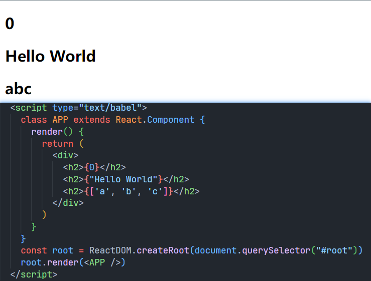
-
当变量是 null、undefined、Boolean 类型时，内容为空；
如果希望可以显示 null、undefined、Boolean，那么需要转成字符串；可以使用 toString 方法、和空字符串拼接，String()等方式；
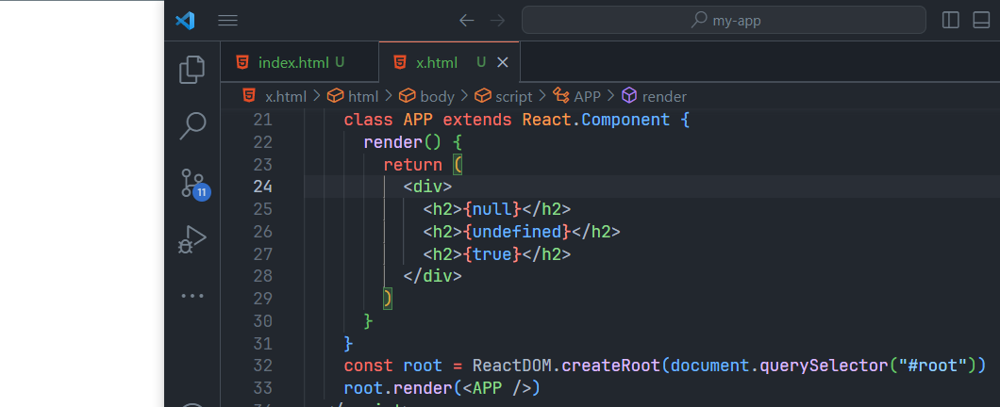
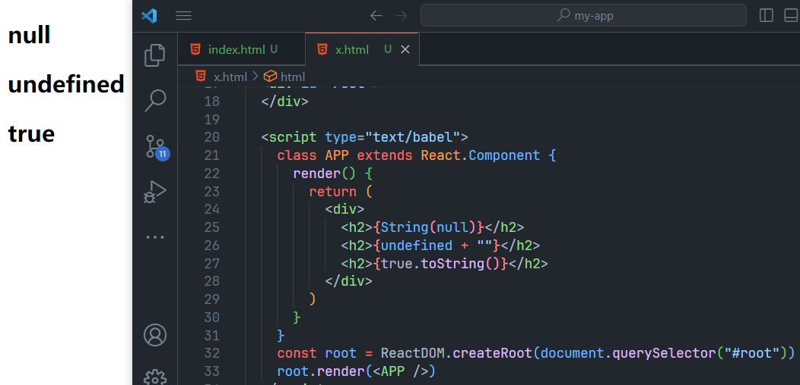
-
情况三：Object 对象类型不能作为子元素
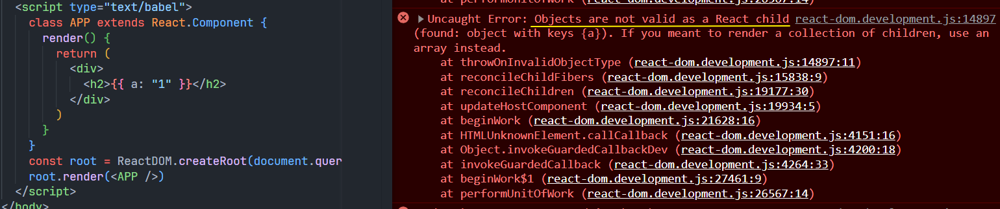
嵌入表达式
- 运算表达式
- 三元运算符
- 执行一个函数
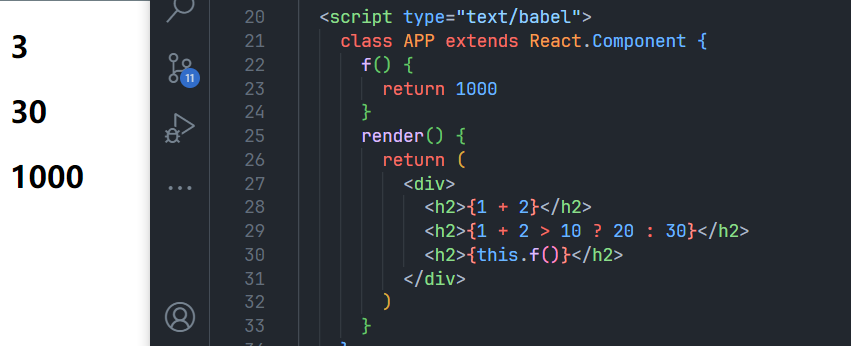
绑定属性
title
<h2 title={this.state.title}></h2>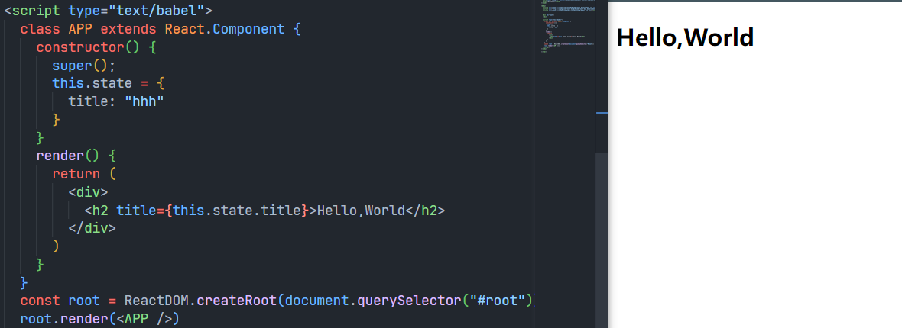
src
<img title={this.state.src} />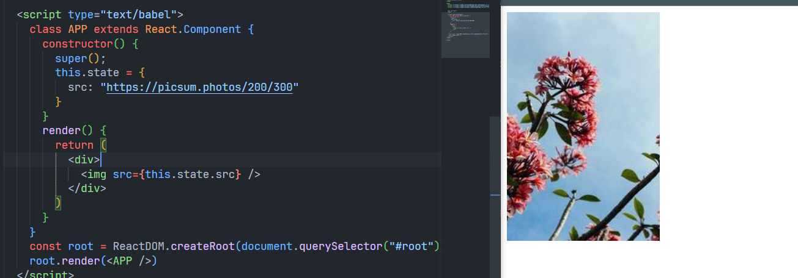
href
<a href={this.state.href}></a>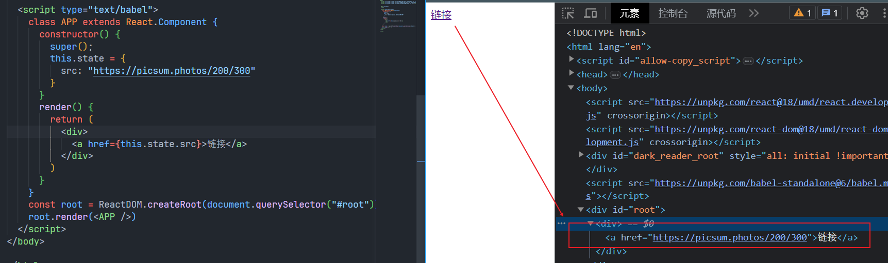
class
React 绑定 class 的时候，属性名是 className 而不是 class。虽然 babel 在解析的时候能正常解析但容易造成误解，而且控制台也会警告
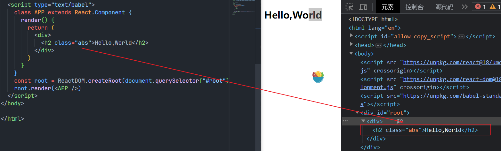
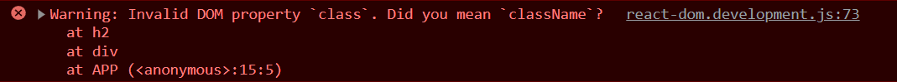
正确写法：
<h2 className="abs">Hello,World</h2>动态修改 class：
-
通过模板字符串进行字符串拼接
可以，但是阅读性差
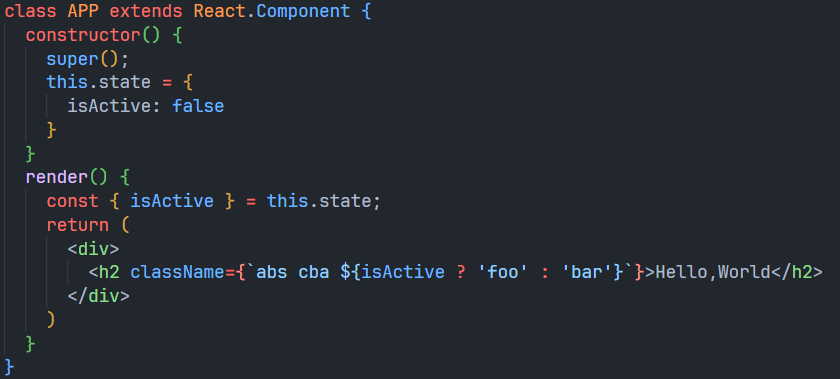
可以将 className 抽离出来
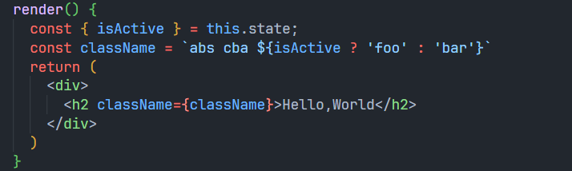
-
通过数组进行管理 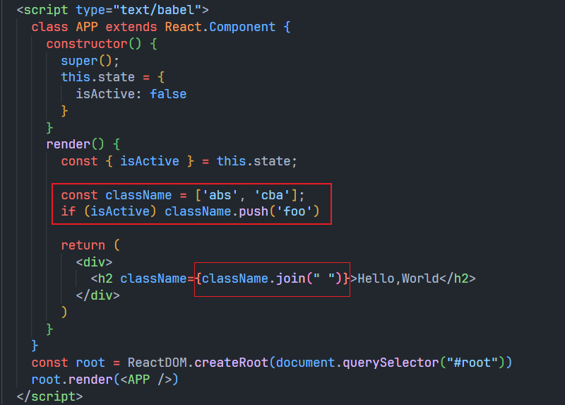
-
通过第三方库：classnames
后面学习框架的时候再学习
style
第一个大括号表示里面的是 js，第二个括号表示里面的是对象。
{ } 不是不能放对象，只是做为子元素的时候 { } 里面不能放置对象
<h2 style={{ color: "red" }}>Hello,World</h2>js 不支持-写法，有些 css 属性需要转换成驼峰标识
<h2 style={{ fontSize: "30px" }}>Hello,World</h2>数据依赖
-
在组件中的数据，我们可以分成两类：
-
参与界面更新的数据：当数据变量时，需要更新组件渲染的内容；
-
不参与界面更新的数据：当数据变量时，不需要更新将组建渲染的内容；
-
参与界面更新的数据我们也可以称之为是参与数据流，这个数据是定义在当前对象的 state中。
定义数据的时候，我们可以通过在构造函数中 this.state = {定义的数据}。
当我们的数据发生变化时，我们可以调用 this.setState 来更新数据，并且通知 React 进行 update 操作；在进行 update 操作时，就会重新调用 render 函数，并且使用最新的数据，来渲染界面。
如果我们不使用 this.setState 更新数据，页面是不会发生变化的，需要我们手动调用 render 函数页面才会重新渲染。
事件绑定
为什么 this == undefined
以下面代码为例，在类中直接定义一个函数，并且将这个函数绑定到元素的 onClick 事件上，当前这个函数的 this 指向的是谁呢？

显然，默认情况下是 undefined

因为在正常的 DOM 操作中，监听点击，监听函数中的 this 其实是节点对象（比如说是 button 对象）；而且 React 并不是直接渲染成真实的 DOM，我们所编写的 button 只是一个语法糖，它的本质 React 的 Element 对象；因此在这里发生监听的时候，react 在执行函数时并没有绑定 this，默认情况下就是一个 undefined；
<button onClick={this.click}>按钮</button>;
// 经过内部转化后大概相当于
React.createElement("button", { onClick: this.click });当我们按钮发生点击的时候，它就会回调传入的函数。我们传入的 this.click 只是一个引用。 下面的代码是其执行的一个抽象过程
// 组件⬇️
const APP = {
click: function () {
console.log(this);
},
};
// createElement⬇️
const config = {
onClick: APP.click,
};
// 点击按钮调用click⬇️
const click = config.onClick;
click();后果
按照原来的写法onClick={this.click},在方法中是 this 值是undefined，自然也就无法调用this.setState()来重新渲染页面。
解决方法
bind()绑定
<button onClick={this.click.bind(this)}></button>
- 公有类字段(Public class fields)

- 传入一个箭头函数(常用)
<button onClick={() => this.click()}>按钮</button>
电影展示案例
效果演示
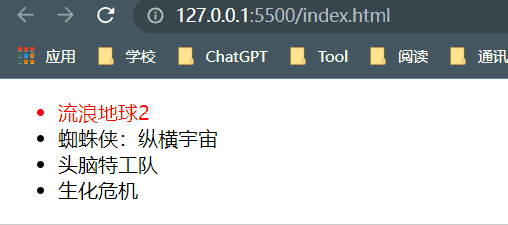
以下内容只是关键 js 代码，其它的如依赖引入、css 等省略不写
::: details 实现方法 1
class APP extends React.Component {
constructor() {
super();
this.state = {
movies: ["流浪地球2", "蜘蛛侠：纵横宇宙", "头脑特工队", "生化危机"],
currentIndex: 0,
};
}
click(index) {
this.setState({
currentIndex: index,
});
}
render() {
const { movies, currentIndex } = this.state;
return (
<div>
<ul>
{movies.map((movie, index) => {
return (
<li
className={currentIndex === index ? "active" : ""}
onClick={() => {
this.click(index);
}}
key={movie}
>
{movie}
</li>
);
})}
</ul>
</div>
);
}
}
const root = ReactDOM.createRoot(document.querySelector("#root"));
root.render(<APP />);:::
或者
::: details 实现方法 2
class APP extends React.Component {
constructor() {
super();
this.state = {
movies: ["流浪地球2", "蜘蛛侠：纵横宇宙", "头脑特工队", "生化危机"],
currentIndex: 0,
};
}
click(index) {
this.setState({
currentIndex: index,
});
}
render() {
const { movies, currentIndex } = this.state;
const liEls = movies.map((movie, index) => {
return (
<li
className={currentIndex === index ? "active" : ""}
onClick={() => {
this.click(index);
}}
key={movie}
>
{movie}
</li>
);
});
return (
<div>
<ul>{liEls}</ul>
</div>
);
}
}
const root = ReactDOM.createRoot(document.querySelector("#root"));
root.render(<APP />);:::
JSX 条件渲染
- if 语句
render() {
let e = null;
if(/* 判断条件 */){
e = <h1>hhh</h1>
}else{
e = (
<ul>
<li>hhhh</li>
</ul>
)
}
return e;
}- 三元运算符
render() {
return (ok?<button>按钮</button>:<h1>hhh</h1>);
}- && 逻辑与运算
使用场景：当某一个值可能为 undefined 的时候，使用 && 进行判断
render() {
return (
<div>
{ friend && <div>{friend.name}</div>}
</div>
);
}JSX 条件渲染案例
效果
::: details 实现代码
class APP extends React.Component {
constructor() {
super();
this.state = {
isShow: true,
};
}
click() {
this.setState({
isShow: !this.state.isShow,
});
}
render() {
const { isShow } = this.state;
return (
<div>
<button onClick={() => this.click()}>按钮</button>
{/* 1. */}
<h3 class={isShow ? "" : "show"}>Hello,World</h3>
{/* 2. */}
{isShow && <h3>Hello,World</h3>}
{/* 3. */}
<h3 style={{ display: isShow ? "block" : "none" }}>Hello,World</h3>
</div>
);
}
}:::
JSX 列表渲染
真实开发中我们会从服务器请求到大量的数据，数据会以列表的形式存储：
- 比如歌曲、歌手、排行榜列表的数据；
- 比如商品、购物车、评论列表的数据；
- 比如好友消息、动态、联系人列表的数据；
在 React 中并没有像 Vue 模块语法中的v-for指令，而且需要我们通过 JavaScript 代码的方式组织数据，转成 JSX：
- 很多从 Vue 转型到 React 的同学非常不习惯，认为 Vue 的方式更加的简洁明了；
- 但是 React 中的 JSX 正是因为和 JavaScript 无缝的衔接，让它可以更加的灵活；
- 另外我经常会提到 React 是真正可以提高我们编写代码能力的一种方式；
如何展示列表呢？
- 在 React 中，展示列表最多的方式就是使用数组的 map 高阶函数；
class APP extends React.Component {
constructor() {
super();
this.state = {
students: [
{ id: 101, name: "what", score: 90 },
{ id: 102, name: "why", score: 80 },
{ id: 103, name: "who", score: 70 },
{ id: 104, name: "when", score: 60 },
],
};
}
render() {
const { students } = this.state;
return (
<div>
<ul>
{students.map((item) => {
return <li key={item.id}>{item.name}</li>;
})}
</ul>
</div>
);
}
}很多时候我们在展示一个数组中的数据之前，需要先对它进行一些处理：
-
比如过滤掉一些内容：
filter函数如只展示分数大于等于 70 的学生
class APP extends React.Component { constructor() { super(); this.state = { students: [ { id: 101, name: "what", score: 90 }, { id: 102, name: "why", score: 80 }, { id: 103, name: "who", score: 70 }, { id: 104, name: "when", score: 60 }, ], }; } render() { const { students } = this.state; return ( <div> <ul> {students .filter((item) => { return item.score >= 70; }) .map((item) => { return <li key={item.id}>{item.name}</li>; })} </ul> </div> ); } } -
比如截取数组中的一部分内容：
slice函数如只展示分数大于等于 70 的两个学生
class APP extends React.Component { constructor() { super(); this.state = { students: [ { id: 101, name: "what", score: 90 }, { id: 102, name: "why", score: 80 }, { id: 103, name: "who", score: 70 }, { id: 104, name: "when", score: 60 }, ], }; } render() { const { students } = this.state; return ( <div> <ul> {students .filter((item) => { return item.score >= 70; }) .slice(0, 2) .map((item) => { return <li key={item.id}>{item.name}</li>; })} </ul> </div> ); } }
列表中的 key
我们可以发现上述代码的返回值里面都有一个 key 属性，这个 key 属性主要就是用来提高 diff 算法的效率。
<li key={item.id}>{item.name}</li>如果不添加 key 属性的话，浏览器会报一个警告。
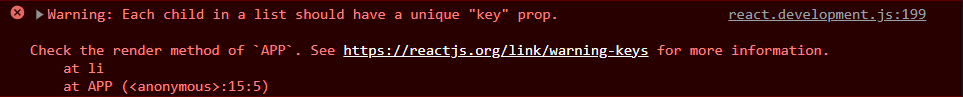
jsx 转换的本质
实际上，jsx 仅仅只是 React.createElement(component, props, ...children) 函数的语法糖。所有的 jsx 最终都会被转换成 React.createElement 的函数调用。
createElement
createElement 需要传递三个参数：
- type
- 当前 ReactElement 的类型；
- 如果是标签元素，那么就使用字符串表示 “div”；
- 如果是组件元素，那么就直接使用组件的名称；
- config
- 所有 jsx 中的属性都在 config 中以对象的属性和值的形式存储；
- 比如传入 className 作为元素的 class；
- children
- 存放在标签中的内容，以 children 数组的方式进行存储；
- 当然，如果是多个元素呢？React 内部有对它们进行处理，处理的源码在下方
经过 babel 转换后的代码
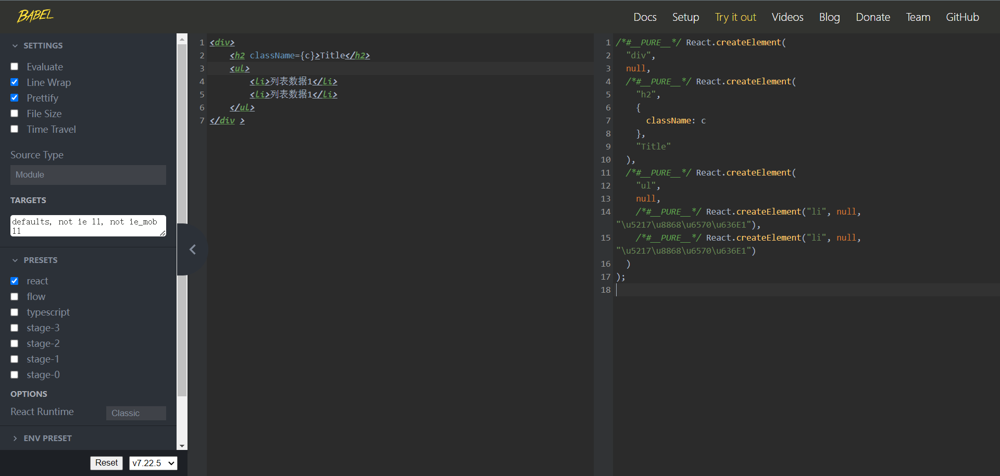
源代码：
<div>
<h2 className={c}>Title</h2>
<ul>
<li>列表数据1</li>
<li>列表数据1</li>
</ul>
</div>转换后的代码：
/*#__PURE__*/ React.createElement(
"div",
null,
/*#__PURE__*/ React.createElement(
"h2",
{
className: c,
},
"Title"
),
/*#__PURE__*/ React.createElement(
"ul",
null,
/*#__PURE__*/ React.createElement("li", null, "\u5217\u8868\u6570\u636E1"),
/*#__PURE__*/ React.createElement("li", null, "\u5217\u8868\u6570\u636E1")
)
);::: tip
代码前的注释 /*#__PURE__*/ 是用来告诉 webpack 这段代码是纯函数调用，如果这段代码没有用到可以在 tree-shaking 的时候直接删除掉。
:::
直接编写 jsx 代码
下面是不使用 jsx 的情况下的代码：
class APP extends React.Component {
render() {
const ReactElement = React.createElement(
"div",
null,
React.createElement(
"h2",
{
className: "header",
},
"Title"
),
React.createElement(
"ul",
null,
React.createElement("li", null, "\u5217\u8868\u6570\u636E1"),
React.createElement("li", null, "\u5217\u8868\u6570\u636E1")
)
);
return ReactElement;
}
}
const root = ReactDOM.createRoot(document.querySelector("#root"));
root.render(React.createElement(APP, null));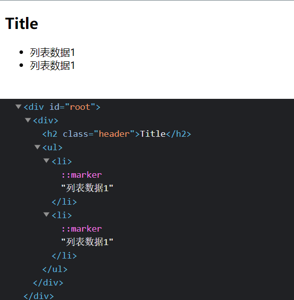
如图，我们没有通过 jsx 书写的代码界面仍然可以正常渲染，但是缺点也很明显，代码阅读性十分差。
另外，在这样的情况下，我们自然不需要 babel 了，所以
type="text/babel"可以被我们删除掉了；<script src="../react/babel.min.js"></script>可以被我们删除掉了；
虚拟 DOM 的创建过程
我们通过 React.createElement 最终创建出来一个 ReactElement 对象：
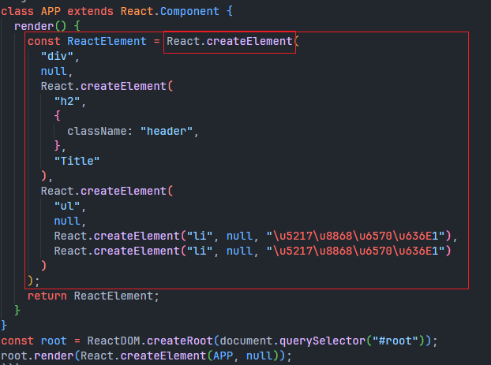
这个 ReactElement 对象是什么作用呢？React 为什么要创建它呢？
-
可以更新的时候进行 diff 算法决定更新哪里；可以进行跨平台；
-
原因是 React 利用 ReactElement 对象组成了一个 JavaScript 的对象树；JavaScript 的对象树就是虚拟 DOM（Virtual DOM）；ReactElement 最终形成的树结构就是 Virtual DOM；
jsx – 虚拟 DOM – 真实 DOM
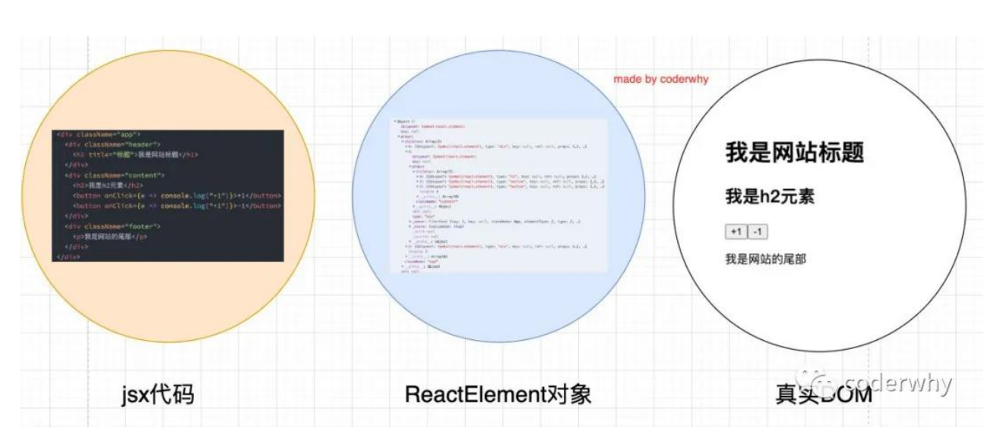
声明式编程
虚拟 DOM 帮助我们从命令式编程转到了声明式编程的模式
React 官方的说法：Virtual DOM 是一种编程理念。
- 在这个理念中，UI 以一种理想化或者说虚拟化的方式保存在内存中，并且它是一个相对简单的 JavaScript 对象
- 我们可以通过 ReactDOM.render 让 虚拟 DOM 和 真实 DOM 同步起来，这个过程中叫做协调（Reconciliation）；
这种编程的方式赋予了 React 声明式的 API：
- 你只需要告诉 React 希望让 UI 是什么状态；
- React 来确保 DOM 和这些状态是匹配的；
- 你不需要直接进行 DOM 操作，就可以从手动更改 DOM、属性操作、事件处理中解放出来；
购物车小案例
效果
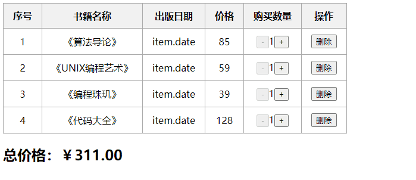
代码：
::: details
class APP extends React.Component {
constructor() {
super();
this.state = {
books,
};
}
format(price) {
return "￥" + price.toFixed(2);
}
getSum() {
return this.state.books.reduce(
(preValue, item) => preValue + item.count * item.price,
0
);
}
changeCount(index, count) {
const newBooks = [...this.state.books];
newBooks[index].count += count;
this.setState({ books: newBooks });
}
remove(index) {
const newBooks = [...this.state.books];
newBooks.splice(index, 1);
this.setState({ books: newBooks });
}
renderBooks() {
const { books } = this.state;
return (
<div>
<table>
<thead>
<tr>
<th>序号</th>
<th>书籍名称</th>
<th>出版日期</th>
<th>价格</th>
<th>购买数量</th>
<th>操作</th>
</tr>
</thead>
<tbody>
{books.map((item, index) => {
return (
<tr>
<td>{index + 1}</td>
<td>{item.name}</td>
<td>item.date</td>
<td>{item.price}</td>
<td>
<button
disabled={item.count <= 1}
onClick={() => {
this.changeCount(index, -1);
}}
>
-
</button>
{item.count}
<button
onClick={() => {
this.changeCount(index, 1);
}}
>
+
</button>
</td>
<td>
<button
onClick={() => {
this.remove(index, 1);
}}
>
删除
</button>
</td>
</tr>
);
})}
</tbody>
</table>
<h2>总价格：{this.format(this.getSum())} </h2>
</div>
);
}
renderBooksEmpty() {
return (
<div>
<h2>购物车为空</h2>
</div>
);
}
render() {
const { books } = this.state;
return books.length ? this.renderBooks() : this.renderBooksEmpty();
}
}
const root = ReactDOM.createRoot(document.querySelector("#root"));
root.render(React.createElement(APP, null));:::